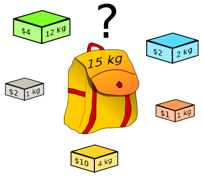
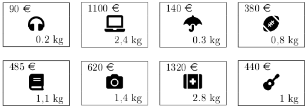

C13 Algorithmes gloutons
Activités
 Activité 1 : Introduction
Activité 1 : Introduction

- Quel est le problème illustré par l'image ci-dessous ?
- Proposer une réponse à ce problème.
Activité 2 : Problème du sac à dos
Activité 3 : Problème du rendu de monnaie
Cours
Vous pouvez télécharger une copie au format pdf du diaporama de synthèse de cours présenté en classe :
Attention
Ce diaporama ne vous donne que quelques points de repères lors de vos révisions. Il devrait être complété par la relecture attentive de vos propres notes de cours et par une révision approfondie des exercices.
QCM
1. Parmi les propositions suivantes, laquelle est exacte ?
- a) Un algorithme glouton fournit toujours une solution optimale
- b) Un algorithme glouton est un algorithme testant toutes les combinaisons possibles
- c) Un algorithme glouton ne donne pas toujours une solution optimale
- d) Un algorithme glouton consomme enormément de mémoire
- a)
Un algorithme glouton fournit toujours une solution optimale - b)
Un algorithme glouton est un algorithme testant toutes les combinaisons possibles - c) Un algorithme glouton ne donne pas toujours une solution optimale
- d)
Un algorithme glouton consomme enormément de mémoire
2. Quel est le résultat de l'algorithme glouton pour le rendu de monnaie si le système monétaire contient les pièces suivantes : 2, 4, 7, 15 et 20 et que la somme à rendre est 38 ?
- a) 15,15,4,4
- b) 20,7,7,4
- c) 7,7,7,7,4,4,2
- d) L'algorithme échoue et ne parvient pas à rendre une somme de 38
- a)
15,15,4,4 - b)
20,7,7,4 - c)
7,7,7,7,4,4,2 - d) L'algorithme échoue et ne parvient pas à rendre une somme de 38
3. Cocher la réponse correcte parmi celles proposées :
- a) Un algorithme glouton procède en effectuant des choix aléatoires
- b) Un algorithme glouton teste toutes les solutions possibles
- c) Un algorithme glouton procède étape par étape en effectuant un choix optimum local
- d) Un algorithme glouton procède par essai/erreur, en revenant en arrière lorsqu'un mauvais choix a été effectué
- a)
Un algorithme glouton procède en effectuant des choix aléatoires - b)
Un algorithme glouton teste toutes les solutions possibles - c) Un algorithme glouton procède étape par étape en effectuant un choix optimum local
- d)
Un algorithme glouton procède par essai/erreur, en revenant en arrière lorsqu'un mauvais choix a été effectué
4. Parmi les problèmes de rendu de monnaie suivants, cocher celui pour lequel l'algorithme glouton ne donne pas un résultat optimal :
- a) Somme à rendre = 18 et valeurs = 13,6,3,1
- b) Somme à rendre = 55 et valeurs = 20,10,5,2,1
- c) Somme à rendre = 27 et valeurs = 10,6,3,1
- d) Somme à rendre = 34 et valeurs = 20,10,5,2,1
- a) Somme à rendre = 18 et valeurs = 13,6,3,1
- b)
Somme à rendre = 55 et valeurs = 20,10,5,2,1 - c)
Somme à rendre = 27 et valeurs = 10,6,3,1 - d)
Somme à rendre = 34 et valeurs = 20,10,5,2,1
5. On considère un problème du sac à dos avec un poids maximum de 2 kg et les objets suivants : ordinateur (1500 €, 1.8 kg), téléphone (900 €, 1.2 kg) et livre (700 €, 0.7 kg). On suppose qu'on utilise un algorithme glouton classant les objets par valeur décroissante. Alors :
- a) La solution optimale est téléphone+livre et celle de l'algorithme glouton est ordinateur seul
- b) La solution optimale et celle de l'algorithme glouton sont les mêmes : téléphone+livre
- c) La solution optimale et celle de l'algorithme glouton sont les mêmes : ordinateur seul
- d) La solution optimale est ordinateur seul et celle de l'algorithme glouton est téléphone+livre
- a) La solution optimale est téléphone+livre et celle de l'algorithme glouton est ordinateur seul
- b)
La solution optimale et celle de l'algorithme glouton sont les mêmes : téléphone+livre - c)
La solution optimale et celle de l'algorithme glouton sont les mêmes : ordinateur seul - d) ~~La solution optimale est ordinateur seul et celle de l'algorithme glouton est téléphone+livre ~~
6. Pour le problème du sac à dos, l'algorithme glouton consiste à :
- a) Générer des combinaisons aléatoires d'objets et les tester
- b) Tester toutes les combinaisons possibles et prendre la meilleure
- c) Classer les objets suivant un critère et prendre les mieux classés en premier
- d) Classer les objets afin d'en éliminer certains puis choisir parmi ceux qui restent
- a)
Générer des combinaisons aléatoires d'objets et les tester - b)
Tester toutes les combinaisons possibles et prendre la meilleure - c) Classer les objets suivant un critère et prendre les mieux classés en premier
- d)
Classer les objets afin d'en éliminer certains puis choisir parmi ceux qui restent
Exercices
Exercice 1 : Rendu de monnaie
-
On se place dans le système monétaire européen
- Donner le résultat de l'algorithme glouton pour le rendu de monnaie si on doit rendre 8,40 €
- En citant un résultat du cours, justifier que l'algorithme fournit toujours une solution optimale dans ce système monétaire.
-
On se place dans le système monétaire suivant : 10,8,4,3, et 1
- Donner le résultat de l'algorithme glouton si on doit rendre 6
- Le résultat obtenu est-il optimal ?
Exercice 2 : Un problème du sac à dos
On considère un problème du sac à dos avec les objets suivants et un sac ayant un poids maximal de 4kg :

- Classer ces objets par valeur décroissante et donner la solution de l'algorithme glouton avec ce critère de classement.
- Même question avec un classement par poids croissant.
- Même question avec un classement par valeur/poids croissant.
- A-t-on obtenu la solution optimale ?
Exercice 3 : Implémentation du rendu de monnaie en Python
Le but de l'exercice est de compléter une fonction rendu écrite en Python qui implémente l'algorithme glouton pour le problème du rendu de monnaie. La fonction prend en argument :
- un flottant
sommequi est la somme à rendre - une liste
valeurscontenant la somme des valeurs du système monétaire utilisé.
Et elle doit renvoyer comme résultat une liste contenant les pièces à utiliser. On renvoie une liste vide lorsque l'algorithme échoue à trouver une solution.
-
Questions préliminaires a. Que doit renvoyer
rendu(18,[15,10,5,2,1])? Quelle est la solution optimale à ce problème ? a. Que doit renvoyerrendu(17,[10,9,8,3])? Quelle est la solution optimale à ce problème ? -
Recopier et compléter le code de la fonction ci-dessous :
- Quel est le rôle du test
somme==0en ligne 16 ? Que renverrait cette fonction pour le problème de la question 1.b) si on supprime entièrement ce test (lignes 16 à 19) et qu'on le remplace parreturn solution? - Tester cette fonction sur les exemples de l'exercice 1.
Exercice 4 : Force brute pour le problème du sac à dos
Soit \(n\) le nombre d'objet d'un problème du sac à dos.
-
Déterminer en fonction de \(n\) le nombre de combinaisons possibles d'objets dans le cas. !!! Aide Affecter à chaque combinaison un numéro en binaire en mettant 1 si l'objet est dans le sac et 0 sinon. Par exemple pour 5 objets, 10110 signifie que les objets 1,3 et 4 sont dans le sac et pas les objets 2 et 5. Déduire de cette numérotation le nombre de combinaisons
-
On suppose qu'un programme informatique teste 100000 combinaisons en une seconde. En combien de temps donnerait-il la solution optimale par force brute pour un problème à 50 objets ? Et pour 100 objets ?